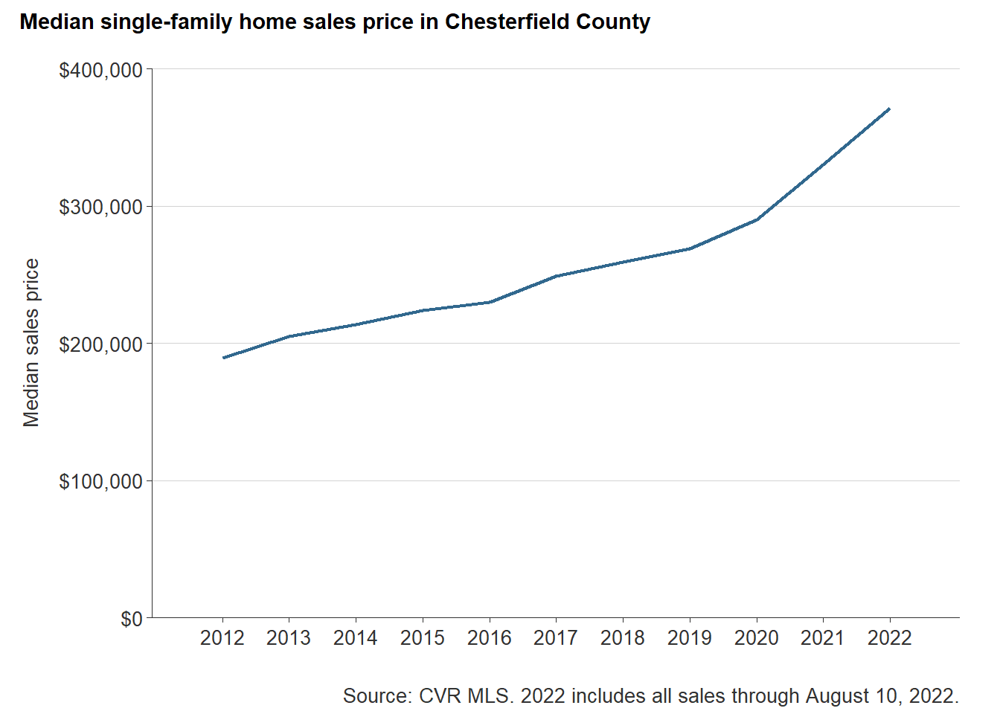
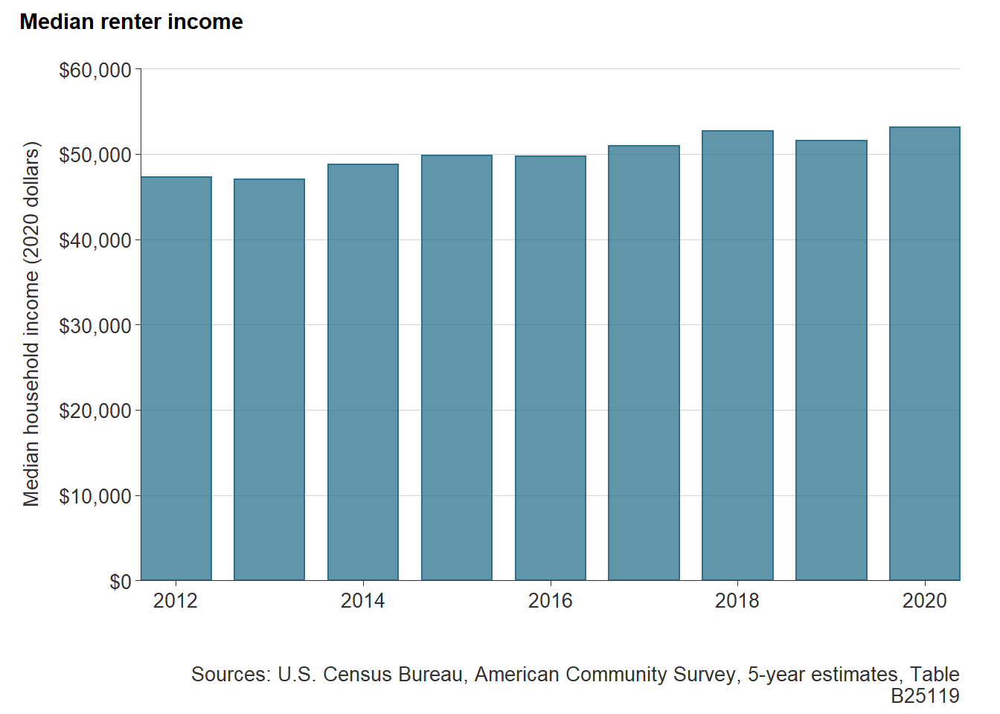
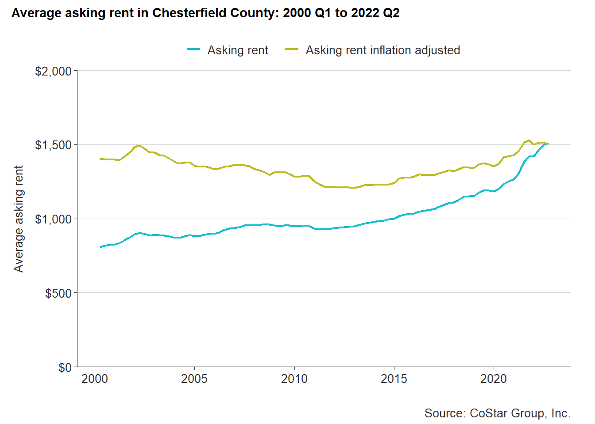

9 Ability-to-pay
This section compares common wages for workers across Chesterfield County to actual housing costs for both homeownership and renting. The analysis reflects the ability for Chesterfield workforce to pay for current housing costs.
9.1 Background
Affording a home in Chesterfield County—whether to own or rent— is directly tied to the incomes that households earn. There are diverse job opportunities across the region, and while some common jobs do pay well-above minimum wage, housing costs are rising faster.
| Occupation | Jobs | Mean hourly wage | Mean annual wage |
|---|---|---|---|
| Retail salespersons | 18,770 | $13.85 | $28,800 |
| Fast food and counter workers | 16,930 | $11.29 | $23,490 |
| Customer service representatives | 13,560 | $17.51 | $36,410 |
| Registered nurses | 12,910 | $36.99 | $76,940 |
| Home health and personal care aides | 9,390 | $11.51 | $23,930 |
| Sources: Bureau of Labor Statistics, Occupational Employment and Wage Statistics, May 2021. |
A diverse workforce also requires diverse housing for those workers. When workers can’t find housing in a community, they either have to commute in or they search for work elsewhere. More in-commuters can exacerbate traffic congestion and increase the amount of spending on transportation costs, while the loss of workers can put strain on local economies.
Another important part of a diverse workforce are public sector jobs, like teachers and police officers. Affordable housing to these households can be the deciding factor for attracting an adequate and talented pool of public service workers that educate our children and keep our neighborhoods safe.
The table below shows the median annual wage for six common occupations with Chesterfield County government. These positions generally pay higher than the county’s most prevalent private-sector jobs.
| Occupation | Median annual wage |
|---|---|
| Planners | $66,202 |
| Police officers | $59,470 |
| CCPS teachers | $54,937 |
| Firefighters | $53,428 |
| Emergency communications officers | $44,166 |
| Administrative workers | $44,115 |
| Source: Chesterfield County. |
Understanding the ability of a range of job types to afford housing in a county contributes to economic development goals and helps ensure that workers that live in the county can continue to live in the county. When people both live and work in a community, they are able to spend less time on the road and more time with their families and investing in their neighborhoods.
9.2 Homeowner affordability
Homeownership is more difficult to achieve in Chesterfield County The COVID-19 pandemic further tightened the housing market across America, and the Richmond region was no exception. The low supply of homes-for-sale coupled with record low mortgage interest rates placed pressure on local housing markets, especially in the suburbs.
The median home sale price in Chesterfield County has increased by 39 percent since before the pandemic in 2019—from $269,000 to $371,480 in 2022 year-to-date.1

In order to afford a home at this price, a household would need to make $89,889 at the current average annual interest rate.2 The table below shows the assumptions made to calculate this figure.
| Variable | Value |
|---|---|
| Median sales price | $371,480 |
| Downpayment | 5.0% |
| Closing costs | 1.5% |
| Loan amount | $358,280 |
| Interest rate | 4.65% |
| Monthly utilities | $250 |
| Monthly payment | $2,097.42 |
| Income needed to buy home | $89,889 |
| Sources: CVR MLS and Freddie Mac Primary Mortgage Market Survey. |
This minimum income is about $37,000 more than the 2020 median household income for renters in Chesterfield ($53,147). In fact, through 2020, the average renter household income is unable to support a home sales price above $250,000.

Compared to 2021 average wages, several common occupations in the county would also struggle to afford the typical home price in the county in 2021. For example, customer service representatives average hourly wage of $17.51 could only afford a monthly mortgage payment for a home priced below $170,000. Even with an hourly wage that is three times that of the Virginia minimum wage ($11.00 per hour), households in the county would still struggle to afford a home.
The table below shows the maximum home sales price affordable at the current average wages for the five most common occupations in Chesterfield County.
| Occupation | Jobs | Maximum home sales price |
|---|---|---|
| Retail salespersons | 18,770 | $130,324 |
| Fast food and counter workers | 16,930 | $106,296 |
| Customer service representatives | 13,560 | $164,761 |
| Registered nurses | 12,910 | $348,165 |
| Home health and personal care aides | 9,390 | $108,287 |
| Sources: Freddie Mac Primary Mortgage Market Survey and Bureau of Labor Statistics, Occupational Employment and Wage Statistics, May 2021. |
Among public sector employees working for the county, maximum home sales prices are higher, reflecting the stronger wages they command. However, most of these prices are at or below $300,000, still well under the county’s current median sales price of $371,480.
| Occupation | Maximum home sales price |
|---|---|
| Planners | $299,574 |
| Police officers | $269,111 |
| CCPS teachers | $248,598 |
| Firefighters | $241,770 |
| Emergency communications officers | $199,858 |
| Administrative workers | $199,627 |
| Sources: Freddie Mac Primary Mortgage Market Survey and Chesterfield County. |
9.3 Renter affordability
The housing supply shortage is also being felt in the rental housing market. Small landlords exiting the rental market and low supply are exacerbating the challenges renters were facing even before the pandemic. For many renters in low paying jobs, the pandemic impacts were heightened for those that could not work-from-home and depended on shuttered service industry jobs. Slow wage growth and increasing rental prices combined to put pressure on the housing stability of essential workers.
Post-recession average asking rent in the county hit a low of $1,207 in 2012 (adjusted to current dollars), but has been on the rise ever since. From 2012 to 2019, average rents rose an average of 0.5 percent each year until 2020, the year of the pandemic.
Between 2019 and 2020, average rent in the county rose by 4 percent ($61)—from $1,366 to $1,427, a substantial increase for individuals and families on tight budgets. Today, the average rent in the county is around $1,500.3

Current minimum annual incomes needed to afford the average apartment in the county—without becoming cost-burdened—start around $52,000 for a 1 bedroom unit. Two bedroom apartments rent at right about the overall average, requiring at least $59,560. Three bedrooms units command a much higher premium over $1,700 per month. Renters looking for these larger units will need an income of $68,320 or more to budget comfortably.
| Bedrooms | Average rent | Income needed |
|---|---|---|
| 1 bedroom | $1,301 | $52,040 |
| 2 bedrooms | $1,489 | $59,560 |
| 3 bedrooms | $1,708 | $68,320 |
| All apartments | $1,499 | $59,960 |
| Source: CoStar Group, Inc. |
This rent is increasingly unaffordable to some of the most common occupations in the county, like retail salespersons and home health aides. For a retail salesperson with an average hourly wage of $13.85, a rent on a single income would be more affordable at $672 to $748 cheaper than the typical rent in the county.
| Occupation | Jobs | Maximum monthly rent |
|---|---|---|
| Retail salespersons | 18,770 | $720.00 |
| Fast food and counter workers | 16,930 | $587.25 |
| Customer service representatives | 13,560 | $910.25 |
| Registered nurses | 12,910 | $1,923.50 |
| Home health and personal care aides | 9,390 | $598.25 |
| Sources: CoStar Group, Inc. and Bureau of Labor Statistics, Occupational Employment and Wage Statistics, May 2021. |
CCPS teachers with a median salary of $54,937 would also be hard pressed to afford the typical rent, especially for units with two or more bedrooms. For an essential part of the workforce there would need to be rental units priced lower at $1,373. Other public sector workers like firefighters, emergency communication officers, and government administrative workers would find it increasingly difficult to find affordable rental housing in the county’s high demand areas.
| Occupation | Maximum monthly rent |
|---|---|
| Planners | $1,655.05 |
| Police officers | $1,486.75 |
| CCPS teachers | $1,373.42 |
| Firefighters | $1,335.70 |
| Emergency communications officers | $1,104.15 |
| Administrative workers | $1,102.88 |
| Sources: CoStar Group, Inc. and Chesterfield County. |
9.4 Takeaways
- Although Chesterfield has a relatively high median household income in the region, many of the county’s essential workers are not earning enough to keep up with the housing market.
- Homeownership will be increasingly out-of-reach for many workers if current supply and demand trends continue, and especially if interest rates begin rising.
- The average monthly rent in Chesterfield is now around $1,500. This is very unaffordable to most of the county’s retail, service, and healthcare service workers.